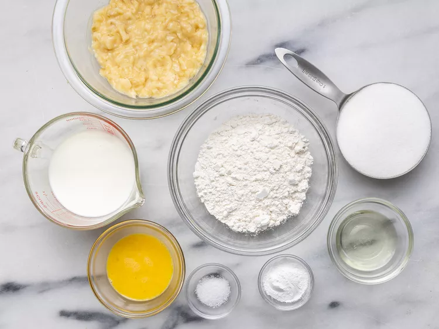
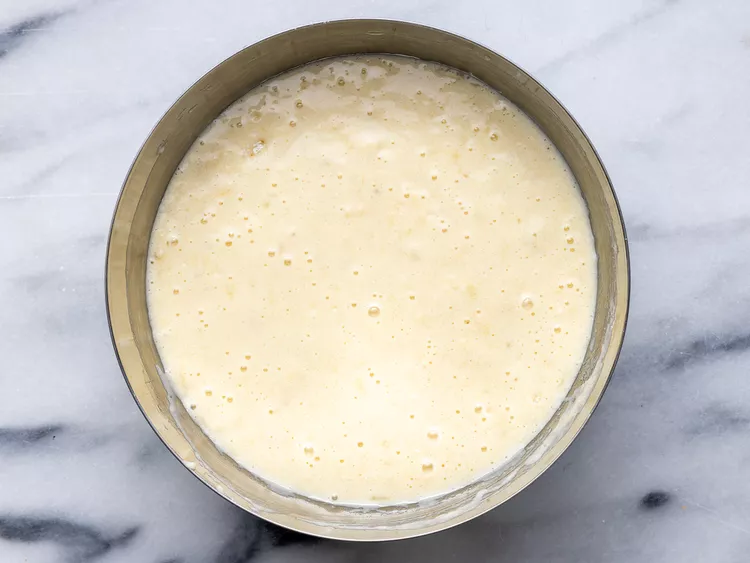
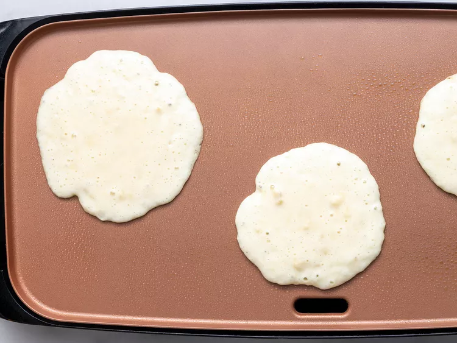
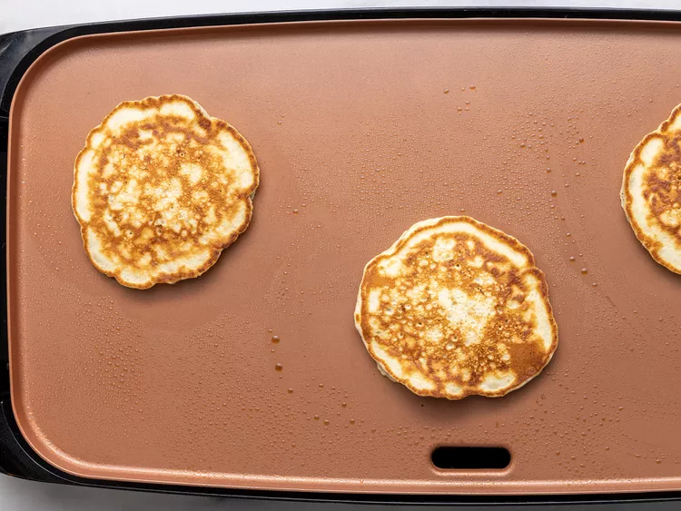

Banana Pancakes

Recipe by ADDEAN1
Description
Wake up on the right side of the bed with a stack of sweet,
cozy, and simple banana pancakes. This top-rated banana
pancake recipe is easy to make and it comes together in
just 15 minutes, so you don't have to wake up early to
enjoy a satisfying breakfast.
Ingredients
- 1 cup all-purpose flour
- 1 tablespoon white sugar
- 2 teaspoons baking powder
- 1/4 teaspoon salt
- 1 egg, beaten
- 1 cup milk
- 2 tablespoons vegetable oil
- 2 ripe bananas, mashed

Steps
- Combine flour, white sugar, baking powder, and salt in a bowl.
- Mix together egg, milk, vegetable oil, and bananas in a second bowl.
- Stir flour mixture into banana mixture; batter will be slightly lumpy.

- Heat a lightly oiled griddle or frying pan over medium-high heat.
- Pour or scoop the batter onto the griddle, using approximately 1/4 cup for each pancake.

- Cook until pancakes are golden brown, 3 to 5 minutes per side.

- Serve hot.